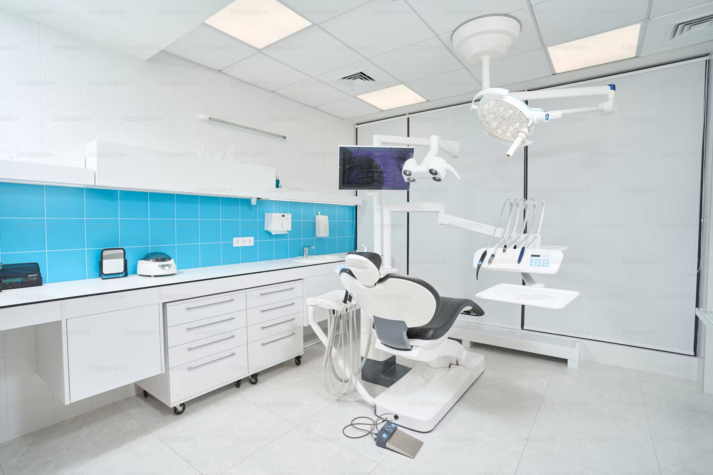

At the heart of our community, our clinic stands as a beacon of health and wellness. With a commitment to providing comprehensive and compassionate care, we are dedicated to enhancing the well-being of our patients. Our state-of-the-art facility is equipped with the latest medical technology, ensuring that every diagnosis is precise and every treatment, effective.
Our team of highly skilled professionals is driven by a passion for medicine and a deep respect for life. From our friendly administrative staff to our expert medical practitioners, we work in harmony to create a welcoming and supportive environment for all who walk through our doors.
We offer a wide range of services, tailored to meet the diverse needs of our patients. Whether it’s preventive care, acute treatments, or chronic disease management, our approach is holistic and patient-centered. We believe in empowering our patients with knowledge and involving them in their own care, for a more personalized and effective healthcare experience.
Your health is our top priority, and we strive to make your visit as comfortable and convenient as possible. We value the trust you place in us and are honored to be a part of your journey to optimal health.